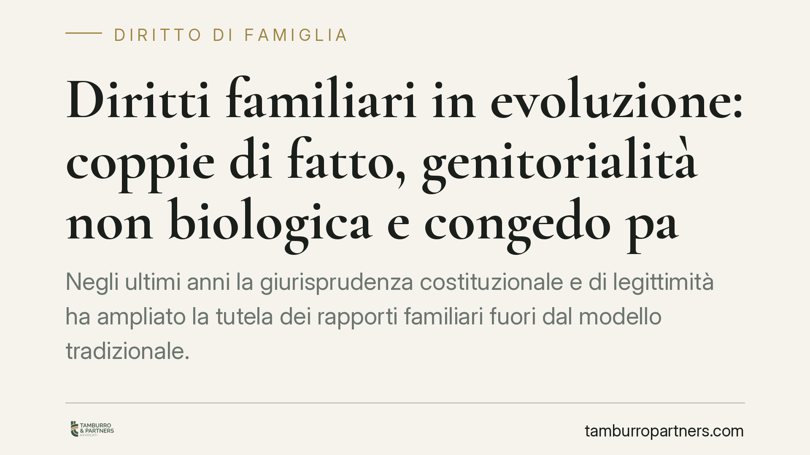

Diritti familiari in evoluzione: coppie di fatto, genitorialità non biologica e congedo parentale
Negli ultimi anni la giurisprudenza costituzionale e di legittimità ha ampliato la tutela dei rapporti familiari fuori dal modello tradizionale. Coppie di fatto, madri intenzionali e genitori non biologici vedono riconosciuti diritti prima incerti. Ricostruiamo il quadro normativo e le ricadute pratiche, senza promettere esiti che dipendono sempre dal singolo caso.

Contesto
Il diritto di famiglia italiano si evolve più per via giurisprudenziale che legislativa. In assenza di una riforma organica, sono la Corte Costituzionale e la Corte di Cassazione a colmare i vuoti, adattando norme scritte per un modello familiare tradizionale a situazioni nuove: convivenze non formalizzate, famiglie omogenitoriali, filiazione da procreazione medicalmente assistita (PMA).
È un terreno mobile. Le pronunce non sempre si consolidano in modo uniforme sul territorio, e le Corti d'Appello possono adottare orientamenti diversi in attesa di indicazioni definitive delle Sezioni Unite o del legislatore. Per questo qualsiasi valutazione richiede l'esame del singolo caso e degli estremi delle decisioni più recenti applicabili.
Inquadramento normativo
Tre sono i piani su cui si concentra il dibattito.
Prescrizione dei crediti familiari. L'art. 2941 del codice civile elenca i casi in cui la prescrizione — cioè il termine oltre il quale un diritto non è più esigibile — resta sospesa. La norma prevede, tra l'altro, la sospensione tra coniugi. La questione aperta riguarda l'estensione di questa tutela ai conviventi di fatto e alle unioni non matrimoniali: un'interpretazione che, se accolta, impedirebbe di eccepire la prescrizione tra partner durante il rapporto.
Genitorialità non biologica. L'art. 5 della legge n. 40 del 2004 individua i requisiti per l'accesso alla PMA. Attorno a questa disciplina si è formato un ampio contenzioso sul riconoscimento del legame con il genitore che non ha un rapporto biologico con il figlio — la cosiddetta madre o padre "intenzionale", ossia chi ha condiviso il progetto genitoriale pur non essendo il genitore genetico o gestante.
Congedo parentale. Il d.lgs. n. 151 del 2001 (Testo Unico sulla maternità e paternità) disciplina congedi e permessi. L'orientamento più recente tende a valorizzare la parità di trattamento tra genitori, ponendo il tema dell'estensione delle tutele al genitore intenzionale nei nuclei omogenitoriali.
Un'avvertenza necessaria: la pertinenza esatta di ciascuna norma dipende dalla fattispecie concreta e dagli estremi delle decisioni invocate. In sede di consulenza vanno sempre verificati numero, sezione e data delle pronunce applicabili.
Implicazioni pratiche
Per le coppie di fatto, la possibile sospensione della prescrizione incide sui rapporti economici: contributi versati, prestiti tra partner, spese comuni. Non poter più far valere un credito per decorso del tempo può cambiare radicalmente l'esito di una separazione di fatto.
Per le famiglie omogenitoriali e i genitori non biologici, il nodo è la certezza dello stato di figlio. Dal riconoscimento del legame discendono diritti fondamentali: mantenimento, successione, decisioni sulla salute e sull'istruzione del minore. L'incertezza sulla trascrizione dell'atto di nascita formato all'estero resta uno dei punti più delicati, con esiti che variano a seconda dell'ufficio e del foro competente.
Per i lavoratori genitori intenzionali, la questione dell'accesso ai congedi ha ricadute concrete su organizzazione familiare e tutela del reddito nei primi mesi di vita del figlio.
Cosa fare in concreto
- Documentate i rapporti economici all'interno della convivenza: bonifici, causali, accordi scritti. In assenza di forma matrimoniale, la prova diventa decisiva.
- Verificate lo stato di filiazione del figlio: è opportuno accertare la corretta trascrizione dell'atto di nascita e l'esistenza di eventuali provvedimenti di riconoscimento.
- Conservate la documentazione del progetto genitoriale condiviso (consensi PMA, atti sanitari, corrispondenza), utile a dimostrare la genitorialità intenzionale.
- Presentate le domande di congedo per tempo, allegando la documentazione dello stato di genitore, e conservate eventuali dinieghi per valutarne l'impugnabilità.
- Richiedete una valutazione aggiornata prima di ogni scelta rilevante: gli orientamenti mutano e le pronunce vanno individuate con i loro estremi esatti.
Il quadro è in movimento e non omogeneo sul territorio. Ciò che vale in un foro può non trovare identica applicazione altrove: la strategia va calibrata sul caso concreto e sugli orientamenti effettivamente vigenti al momento dell'azione.
Contributo informativo a cura di Tamburro & Partners Avvocati – Avv. Giuseppe Tamburro. Non costituisce parere legale.
Ogni famiglia ha il suo equilibrio.
Separazione, divorzio, affidamento, assegno: se vuoi un confronto riservato su una specifica situazione, scrivi allo studio. Ti rispondiamo entro un giorno lavorativo.